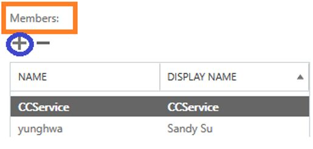
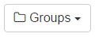
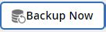

Getting started with SaaS Backup for Office 365 Edit on GitHub Request doc changes
Getting started with NetApp SaaS Backup (formerly "NetApp Cloud Control") for Office 365 includes various steps such as deciding what type of storage you want to use to back up your data, gathering pertinent information, creating a MS Office 365 service account, and assigning user permissions.
- Deciding what type of storage to use to back up your data
- Gathering information about your SaaS Backup for Office 365 storage platform
- Creating a new MS Office 365 service account with global administrator permissions
- Assigning user permissions to your MS Office 365 service account
- Moving unprotected data to a protected state
- Performing an immediate backup of a specific backup policy
Deciding what type of storage to use to back up your data
NetApp SaaS Backup for Office 365 Control provides Amazon S3 storage and Azure Blob storage as options for backup. SaaS Backup for Office 365 also enables you to Bring Your Own Storage (BYOS) to back up your data. If you choose to use storage provided by SaaS Backup, you do not need to gather any information before signing up. If you choose the BYOS option, you must gather pertinent information about your storage before signing up.
Gathering information about your SaaS Backup for Office 365 storage platform
You need the following information to set up your BYOS Amazon S3 storage, StorageGRID Webscale object storage, or Azure Blob storage.
-
Amazon S3
If you are using the Amazon S3 bucket provided by SaaS Backup, you do not need to gather this information. If you are using your own Amazon S3 bucket, you must gather the following information:-
Bucket name
-
Region
-
Access key
-
Secret key
-
-
StorageGRID Webscale
SaaS Backup does not create the StorageGRID Webscale bucket. It must already exist.-
Host/IP address
You must have a public IP address and a domain name with a certificate, for example, webscale.netapp.com. You must also be using Transport Layer Security (TLS) protocol 1.2. -
Port
The open port should be 8082 or 443, whichever is configured. -
Bucket name
-
Access key
-
Secret key
-
-
Azure Blob
-
Account name
-
Container name
-
Access point
-
Access key
-
Creating a new MS Office 365 service account with global administrator permissions
Creating a new Microsoft Office 365 service account with global administrator permissions is recommended when signing up for SaaS Backup for Office 365. However, creating a new account is not required. If you prefer, you can use your existing Microsoft Office 365 service account.
-
Log in to your Office 365 Management portal using an account with administrative privileges.
-
Click Users.

-
Select Active users, and then click Add a user.

-
Enter the details of the new service account.
-
First name
-
Last name
-
Display name
-
User name
The user name is the name of the service account.

-
-
Expand Roles, select Global administrator as the role, and then click Add.

The service account details are sent to the administrator. -
Log in to your Office 365 Management Portal with the new account to activate it.
-
Ensure that the service account includes licenses for Exchange Online and SharePoint Online, at a minimum.
This is especially important if you restrict the individual licenses for the Global administrator role.
Assigning user permissions to your MS Office 365 service account
Before you sign up for SaaS Backup, you must assign user permissions to your Microsoft Office 365 service account. The process you follow to assign user permissions depends on the Microsoft services (Exchange Online, SharePoint Online, OneDrive for Business) you are using with SaaS Backup.
Assigning user permissions for Microsoft Exchange online
If you plan to use SaaS Backup with Microsoft Exchange Online, you must configure impersonation. Impersonation allows your Microsoft Office 365 service account to impersonate user accounts and access associated permissions.
To automatically configure impersonation, run MSDN PowerShell Commands.
To manually configure impersonation:
-
Use Exchange Admin Center or an administrator account to log in to your Microsoft Office 365 service account.
-
Select the Exchange tab.
-
In the left navigation pane, under Dashboard, select Permissions.
-
Click Admin roles.
-
Double-click in the right pane to select Discovery management.
-
Under Roles, click the + symbol.

-
Select ApplicationImpersonation from the drop-down menu.
-
Click Add.
-
Click OK.
-
Verify that ApplicationImpersonation was added under Roles.
-
Under Members, click the + symbol.

A new window appears -
Choose the user name.
-
Click Add.
-
Click OK.
-
Verify that the user name appears in the Members section.
-
Click Save.
Signing up with a NetApp SSO account
-
Enter the SaaS Backup for Office 365 URL into your web browser:
https://saasbackup.netapp.com -
Click Sign up at the bottom of the landing page.
-
Accept the End-User License Agreement.
-
Click Sign Up with NetApp SSO.

-
Enter your NetApp SSO and password, and then click LOGIN.
-
Enter the requested user information, and then click Sign Up.
-
Click the Services icon.
-
Click the Microsoft Office 365 icon to select the SaaS service.
-
Click Add Microsoft Office 365 Account.
-
Enter the email address and password for your Microsoft Office 365 global administrator service account, and then click Sign in.
A list of the permissions requested by SaaS Backup for Office 365 is displayed. -
Click Accept.
-
Click Next.
A list of the available Microsoft Office 365 services is displayed. -
Select the Microsoft Office 365 services that you want to activate.
-
Click Next.
-
Select the subscription type.
For the Free Trial, enter the activation code provided by your channel partner or sales representative, or obtained from a marketing representative through email.
For a Licensed subscription, you must enter the requested information, and then validate the subscription.
-
Click Next.
-
Select your backup storage option.
You can use storage provided by SaaS Backup or the Bring Your Own Storage (BYOS) option.-
If you are using storage provided by SaaS Backup:
-
Click SaaS Backup Provided Storage.
-
Select the Amazon S3 or Azure Blob storage option.
-
Click Next.
-
Review your configuration, and then click Save.
-
-
If you are using the BYOS option:
-
Click Bring Your Own Storage (BYOS).
-
Click your BYOS option.
-
Enter the information you previously gathered for your BYOS option.
-
Click Test Connection.
-
Click Next.
-
Review your configuration, and then click Save.
-
-
Moving unprotected data to a protected state
When you set up SaaS Backup for Office 365, by default, your data is unprotected. You must move your data from an unprotected state to one of the backup policy tiers for it to be scheduled for back up.
-
From the Dashboard, select the service containing the unprotected data.
-
Click view next to the number of unprotected mailboxes, MySites, sites or groups.
-
Select the items that you want to protect.
-
Click the Groups menu.
 -
Select the tier for the backup policy that you want to assign.
See Moving unprotected data to a protected state for a description of the backup policy tiers. -
Click Apply.
Performing an immediate backup of a specific backup policy
When you set up SaaS Backup for Office 365, by default, all of your data is unprotected. After you move your data to a protected tier, you can perform an immediate backup of the tier to which you moved your data. This prevents your data from being at risk until the first scheduled backup occurs. If you can wait for the first scheduled backup, performing an immediate backup is not necessary.
You can perform an immediate backup any time you deem necessary for data protection. If you are running a trial version of SaaS Backup for Office 365, you can only perform three immediate backups per day, per service.
-
From the Dashboard, select the service for which you want to perform an immediate backup.
-
Under Backup Policies, click the tier that you want to back up.
-
Click Backup Now.

A message is displayed indicating that the services under the selected tier will be placed in the job queue for immediate backup. -
Click Confirm.
A message is displayed indicating that the backup job was created. -
Click View the job progress to monitor the progress of the backup.